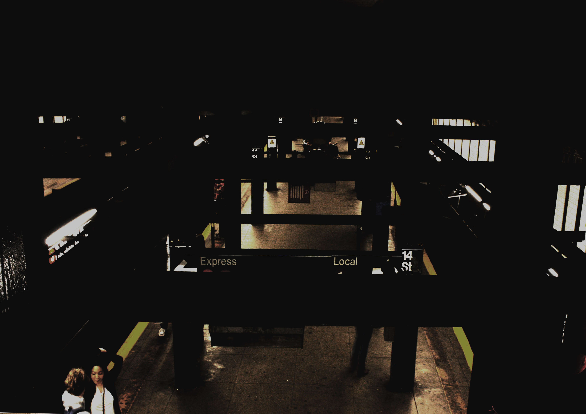

infomation
☰
×
WORKS
ABOUT
kento,s would wide infomation photo
indivisual a day in life
frrd-in a sports mode sp fast
inside
support by natural remake
kento,s would wide infomation photo-2 indibisual personarity is rightand stay in New York would wide
